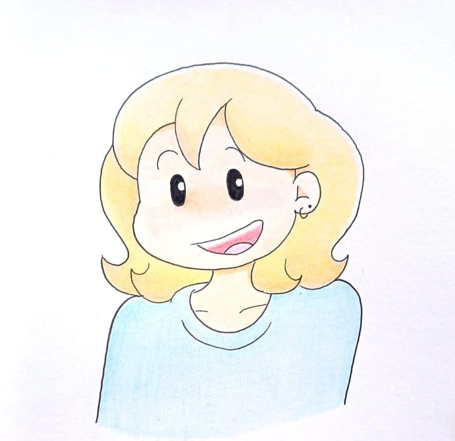

Hi, I'm Bianca. An Electrical and Electronic Engineering student at Stellenbosch University with a lifelong habit of drawing inside and outside the margins. Alongside my studies, I create hand-drawn and hand-painted artwork inspired by anime, cartoons, games and some odd original characters that refuse to leave my sketchbook.
Everything here is made with traditional mediums on paper: pencil studies, fineliner linework and coloured pencil. One of my long-term goals is to reach digital art practice, but for now I remain analog.
This site doubles as my portfolio and my commission desk. Every commission is handled personally, start to finish, with regular updates so you can watch your piece take shape.
View My Artwork